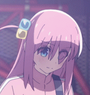

Kessoku Band is awesome
Kessoku Band (結束バンド Kessoku Bando) is the main unit band of Bocchi the Rock! series. The name "Kessoku Band" is a pun on "Kessoku" (unity) and "Kessoku Band" (cable tie).
We are 結束バンド

Hitori Gotoh
(lead guitar, lyrics)
(lead guitar, lyrics)
"It certaintly is a downer. But it's very Bocchi.
It might not resonate with too many people,
but those it does, it'll hit deeply."
It might not resonate with too many people,
but those it does, it'll hit deeply."
Call to action! It's time!
Sign up for Kessoku Band by clicking that button right over there!